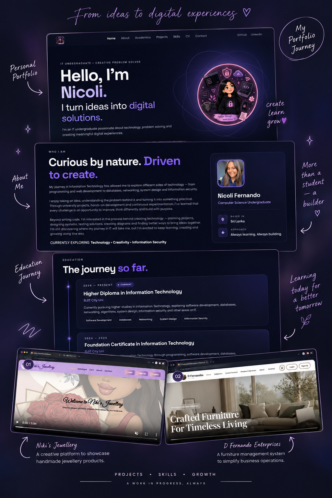

What is a Portfolio?
A portfolio is a carefully selected collection of your work, achievements, skills and experiences. It provides evidence of what you can do and how you have developed over time. It may be physical or digital.
LESSON 02
SHOWCASE • CREATE • GROW
A portfolio is a carefully selected collection of your work, achievements, skills and experiences. It provides evidence of what you can do and how you have developed over time. It may be physical or digital.

Choose a portfolio type according to its purpose:
Highlights personal interests, creative work, talents and individual projects.
Presents professional credentials, CV, cover letter and work experience.
Demonstrates workplace contributions, work samples and performance.
Shows learning progress through assignments, projects and reflections.
A professional career dossier can include:
A CV SUMMARISES YOUR PROFILE; A PORTFOLIO SHOWS THE EVIDENCE.
| CV (Curriculum Vitae) | Portfolio | |
|---|---|---|
| ◉ Purpose | Summarises education, skills, experience and qualifications. | Demonstrates skills through selected work and supporting evidence. |
| ▤ Content | Concise written information and key facts. | Projects, case studies, screenshots, certificates and reflections. |
| ▱ Format | Usually a short document, often one or two pages. | Can be a website, online profile, PDF or physical collection. |
| ◷ Focus | Summarises qualifications and previous experience. | Shows how skills are applied and how work is developed. |
| ♙ Use | Useful for initial job and internship screening. | Useful for interviews, networking and demonstrating proof of work. |
FROM PLANNING TO CONTINUOUS IMPROVEMENT.
MAKE YOUR PROFESSIONAL FOOTPRINT VISIBLE.